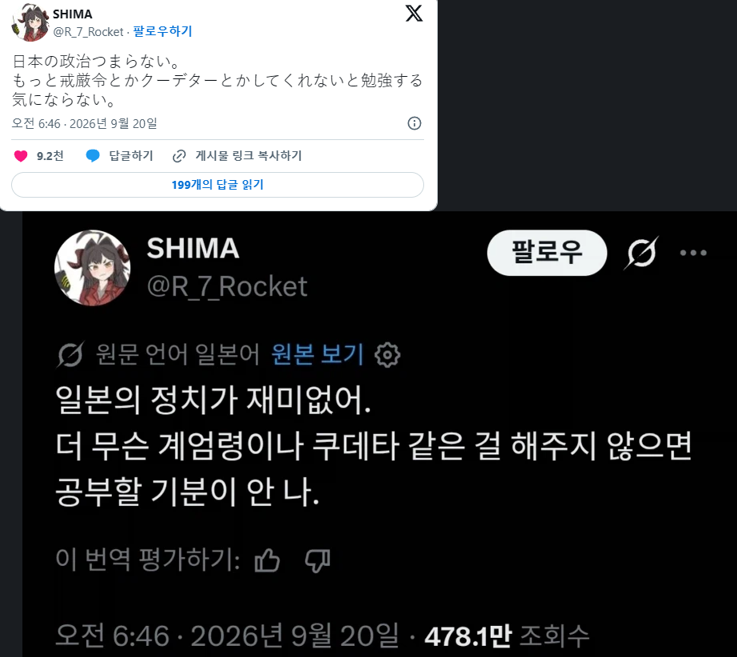

정치가 재미 없다는 일본인
댓글
작고 뚱뚱한 애들 맞으면 다이나믹 해지긴 한데...

애초에 일본정치제도가 안정성이 높아질수밖에 없는 구조니까 그렇지
장점도 있고 단점도 있음
내각책임제 = 쓰레기
발전 없이 걍 나눠 먹기
쓰레기라고 하기에는 내각제 하는 나라가 대통령제 하는 나라보다 많은걸?
아베가 열심히 좀 해봐
노력한게 지금...
그럼 그럴만한 애들을 뽑던가 해라
북한에게 일본인이 밥 먹듯이 납북 당하던 시절을 알아볼까요
그런게 일어나면 공부 안해도 돼
눈뜨고 일어나니 이웃국가가 적국이라면서 전시동원되는 마법이 일어남
다이나믹 코리아 탄핵도 벌써 두차례
하쿠암탄쿠탄
쟤네 정치가 재밌었던 시절에는
비행기 납치에 테러에 인질극에 난리었잖어ㅋㅋㅋ
재밌는건 다 안가르치자너 ㅋㅋㅋㅋㅋㅋㅋㅋ
너희도 들고 일어나라
그냥 편안하게 옆의나라 구경해..
ㄹㅇ 강 건너 불 구경이 재밌지, 불 속으로 뛰어드는 게 재밌겠냐
일본 정치도 꽤 다이나믹 했는데 ㅋㅋㅋ
뭐지 우리가 볼 땐 니네 정치도 존나 재밋는데 암살도 하고 니네 총리 춤추고 그러드만
ㅋㅋ너거 딸딸이부대는 이런거 못하제?
기시 노부스케가 치안출동 함 갈겨줬어야 이런 배부른소리를 안할텐데
10대 일남들이 현직 정치인 칼빵놓는 꿀잼나라 였을텐데
눈을 떳구나
조선 민주주의 인민 공화국으로 오거라
고등학생이 정치인 벽력일섬 놓던 나라잖아 분발하라고

이 와중에도 아베는 아무 말이 없다
자민당과 통일교의 커넥션이 재미가 없나?
뭐라고 이새끼들
계엄 쿠데타 올인원 이벤트를 원하는가?
아베 암살에 통일교는 존나 개꿀잼이었는데
헉
저 새끼들은 저게 재미로 할 만한 얘기가 아니란 걸 모르나봐
일본의 정치가 재미없다는건 정치에 대해서 제대로 관심이 없는 애거나 혹은 그냥 애새끼임. 일본정치체계는 세계사에 유례가 드물 수준의 신기한 곳임. 그 중세 다이묘 나와바리 대물림 정치체계와 그에 이르게된 전공투, 그리고 그보다 더 한 나루토와 귀칼의 시대를 보면 재미가 없을 수가 없음. 2차세계대전이전의 독일 정치체계보다 도파민돌고 파고들것들이 많을 지경인데
진짜로 하면 재미있지 않을걸?
우린.... 우린 지난 세기동안 너무 많은 일들이 있었어....
더 재밌는거 개최국이잖아
대충 일본국회에서 칼로 찌르는 레전드짤
솔직히 근대사는 일본이 세계에서 젤 재밌는 파트인데;; 그 난장판을 벌린 벌로 밋밋한 현대사가 되버림
실제로 일어나면 별로 재미없을텐데
전 총리, 권력의 정점이었던 자를 영화에서처럼 투두두 따당우타우타!!! 해버렸는데도 전혀 도파민을 못느낀단 말인가...!!
지들 스스로는 다 냄새난다고 덮어놓고 있으면서 도파민을 어디서 찾고 있음ㅋㅋ
직접 해보라 혀
키시 노부스케가 계엄령을 때려서 일본을 한번 뒤집었어야 했는데